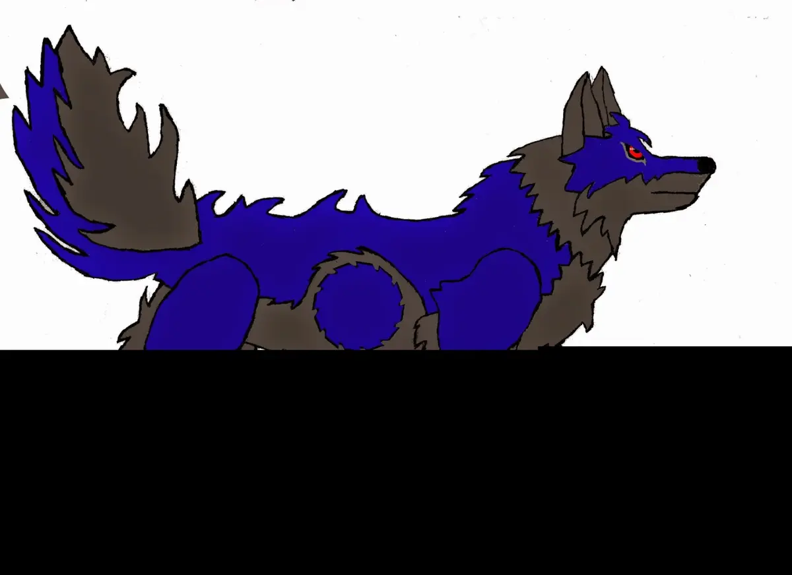

ウォルフィとYOSHIの出会い
2人はフォレストソルより前に、同じ別チームで活動していました。 当時のYOSHIのMinecraftスキンをウォルフィが作り直した際、動物系の姿へ変わっています。
Record of the Forest
これは年表の空白を想像で埋めた物語ではなく、今までに確認できた出来事を並べたフォレストソルの記録です。 始まりはウォルフィの一枚絵。そこからYouTube、仲間との出会い、解散と再結成を経て、今の「太陽の森」へつながりました。
The First Footprint
現在のウォルフィへつながる、いちばん古い足跡。

ウォルフィの最初期デザインは、青と濃い灰色を主体にした四足の狼でした。 今のデフォルメ姿とは大きく違いますが、ここが長い道の出発点です。
首元の赤いバンダナには、今は亡き愛犬・雷尾の思い出が受け継がれています。 見た目を飾るだけではない、今のウォルフィまで変わらず残った大切な印です。
Companions of the Forest
旧チームから再結成へ。3人の足跡がひとつの道になるまで。
2人はフォレストソルより前に、同じ別チームで活動していました。 当時のYOSHIのMinecraftスキンをウォルフィが作り直した際、動物系の姿へ変わっています。
以前のチームは一度解散します。ただし、ここで仲間の道が終わったわけではありませんでした。 もう一度チームを組むための、新しい分かれ道になります。
チームを組み直す時にキアラが加入。キアラのスキンを決める中で、メンバーの姿を動物系にそろえる方針になりました。 3人が動物になった理由の細部は記憶が曖昧なため、今も無理に物語を足していません。
その後は旧リーダーを含む4人で、イラストと合わせて「（リーダー名）と森の仲間たち」という形の名前で活動しました。 旧リーダーの名前は、この記録では掲載していません。
旧リーダーが離れた後、残ったYOSHI・ウォルフィ・キアラの3人で活動を続けることになりました。 ここから、リーダー名に頼らない新しいチーム名が必要になります。
旧チーム名に残っていた「森」を受け継ぎ、そこへ「太陽」を加えてフォレストソルへ。 3人はフォレストソルでは全員が同期で、加入順による先輩・後輩はありません。
How the Name Was Born
名前の意味は「太陽の森」。過去の森を残しながら、3人で進む新しい光を加えた名前です。
The Forest Today
決めすぎない自由な掛け合いと、それぞれの歩き方。

普段は落ち着きながら、活動の動きは大胆。配信参加が多く、ゲームやコラボの幅を広げる存在。

イタズラを仕掛けることが多い狼。配信だけでなく、公式サイトも自ら作り、管理している。

コーヒー好きで負けず嫌いな白黒熊。ゲーム面では3人の中で、おそらく一番上手い。
細かな台本や定型の会話は作らず、ゲームの中で起こる動きや、その場の掛け合いを大切にしています。 現在は通常動画より配信が中心。主にウォルフィとYOSHIが活動し、同じアカウントから2つの配信を同時に行うこともあります。
The Path Continues
ここまでが、現在確認できているフォレストソルの足跡です。 次の一歩は、配信や新しい企画の中で少しずつ増えていきます。